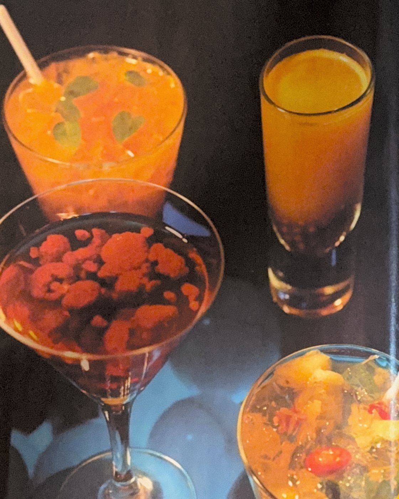
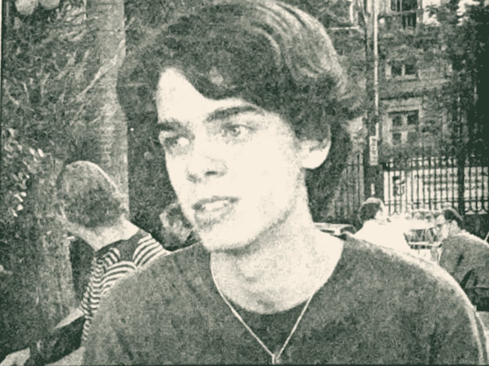

Rosito
Espumante rosé · Inspiração cubana
Estrela a carta desde a primeira noite, em 2005.
Maître · Autor da carta do Miam Miam · Botafogo, Rio
O anfitrião que criou os drinques do Miam Miam — o casarão de Botafogo que virou clássico do Rio.

O anfitrião
Desde 2005, o Miam Miam ocupa um casarão de família em Botafogo — o mesmo que pertenceu à avó da chef Roberta Ciasca — e ajudou a apresentar o conforto à mesa carioca. Entre móveis de outras décadas e tijolo aparente, uma figura atravessa essa história desde a primeira noite: João Carlos Graf Accioli Jourdan — João, para quem senta no balcão —, o maître que faz da chegada de cada cliente um pequeno ritual.
É dele, ao lado da sócia Danni Camilo, a carta de drinques da casa — eleita a melhor do Rio pela Veja em 2008, com 36 opções — e foi dele também a carta do OuiOui, o segundo restaurante da chef. Quem senta no balcão aprende rápido: melhor do que escolher no cardápio é perguntar. Ele sabe agradar cada paladar.
Trajetória
Datas aproximadas aparecem como “c.”. Memória, como um bom drinque, se serve com cuidado.
2001
Antes do salão, a assembleia: aos 17 anos, João aparece na Folha Dirigida como liderança do movimento estudantil carioca — "comemorou unidade da oposição na etapa do Rio". Ler uma sala e falar com todo mundo, ele aprendeu cedo.

2005 →
A chef Roberta Ciasca abre, no casarão da avó em Botafogo, a casa que apresentaria o comfort food ao Rio. João está lá desde a primeira noite — o rosito, criação da casa, estrela a carta desde a inauguração.
2008
A Veja elege a carta do Miam Miam — 36 opções, assinada por João com a sócia Danni Camilo — a melhor carta de drinques da cidade. No mesmo ano, ele lança os long shots de sagu, sucesso sem álcool nos tempos da Lei Seca.
2009
O Miam Miam é bicampeão de "melhor moderno" no Rio Show, de O Globo; os mojitos de João — uns trinta por noite — ganham fama de "melhores que os de Cuba"; e a dupla assina também a carta do OuiOui, o segundo restaurante da chef.
2012
Certificado pela Diageo nas etapas do Programa World Class realizadas em maio, em São Paulo — a formação da maior plataforma de coquetelaria do mundo.
2014
Um dos 8 vencedores nacionais do concurso das marcas Ketel One e Tanqueray Nº TEN, que avaliou cerca de 100 bares e restaurantes em 20 cidades do país.
2015
Classificação para a etapa brasileira da maior competição de bartenders do mundo. No mesmo ano, o Miam Miam entra no guia Michelin com o Bib Gourmand — presença mantida até o guia de 2026.
2025
O Miam Miam celebra duas décadas, com novos sócios e carta revisitada — e João segue recebendo como no primeiro dia.
Raízes e repertório
◆ Botânica
Antes das taças, as plantas: João conhece biologia, e isso aparece no copo. Nada de concentrados — fruta fresca, hortelã, tomilho, cardamomo, manjericão, sagu de mandioca. Ingrediente, para ele, é matéria viva, não enfeite.
◆ Fé
Devoto das religiões de matriz africana, carrega delas o que também sustenta uma boa casa: respeito pelo que se serve, cuidado com quem chega e a certeza de que receber é fundamento.
◆ Sala
Maître é ofício de escuta — e João escuta desde menino: aos 17 já falava por assembleias inteiras no movimento estudantil. Ler a mesa, sugerir sem impor, lembrar o drinque da última visita. Hospitalidade como técnica e como talento.
Reconhecimento
Prêmios do bartender — e da casa que ele ajuda a construir.
“Ele sabe agradar cada paladar.”
— Frequentadores do Miam Miam, em avaliações públicas
O próximo capítulo
O sonho que João serve devagar: uma casa de brasilidades — do dendê ao pequi, da farinha ao mar — onde cozinha e salão empregam, formam e acolhem pessoas trans, LGBTQIAP+ e em situação de vulnerabilidade. Um lugar onde o receber bem, aprendido em vinte anos de balcão, vira porta de entrada: de quem chega para jantar e de quem nunca teve a primeira chance.
Em gestação, ainda sem nome. As melhores receitas levam tempo.
◆ À sua mesa
Para convites, eventos, consultoria de cartas ou só um alô — os canais estão abertos. Sem pressa, como todo bom serviço.
Canais em atualização — em breve nos endereços definitivos.